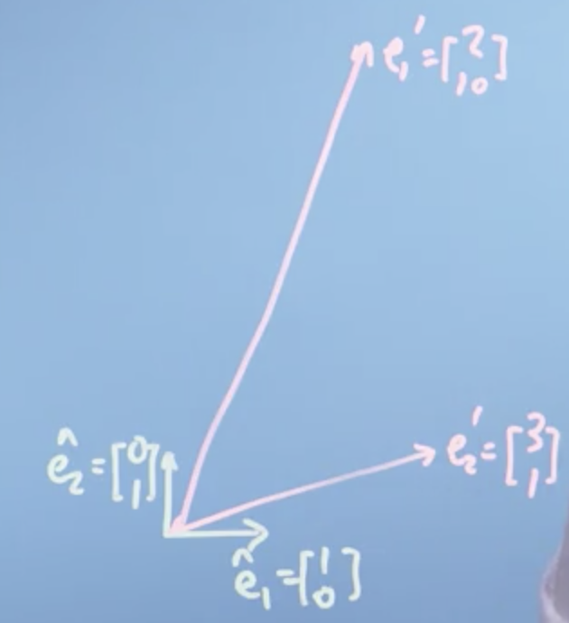
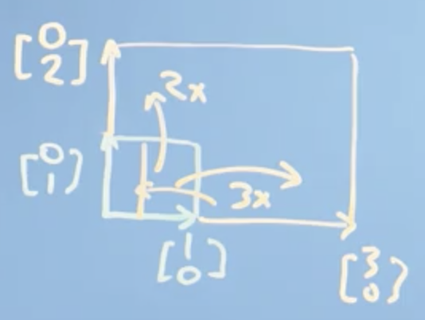
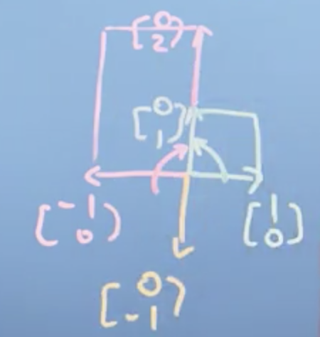
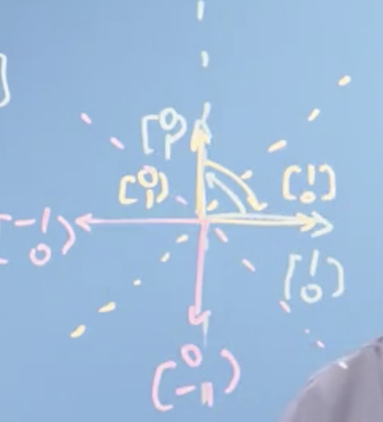
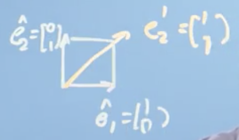
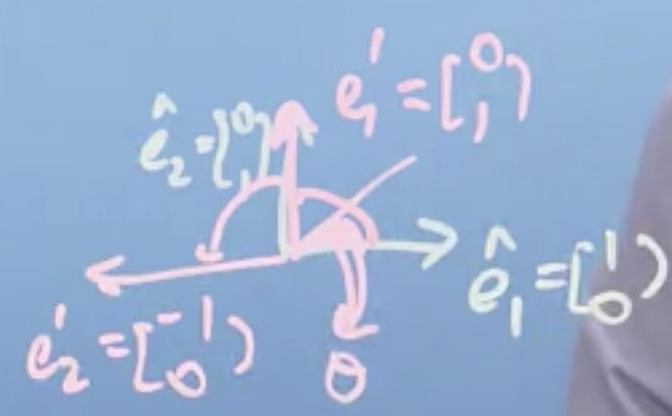
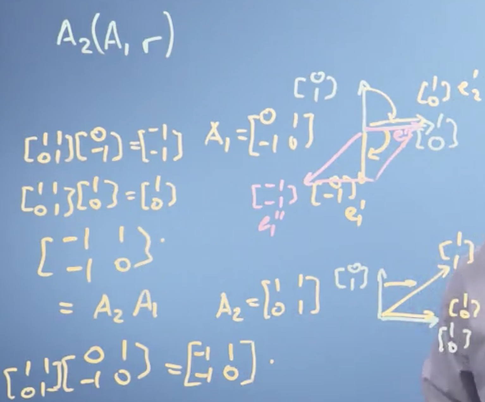
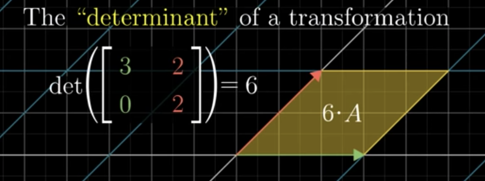
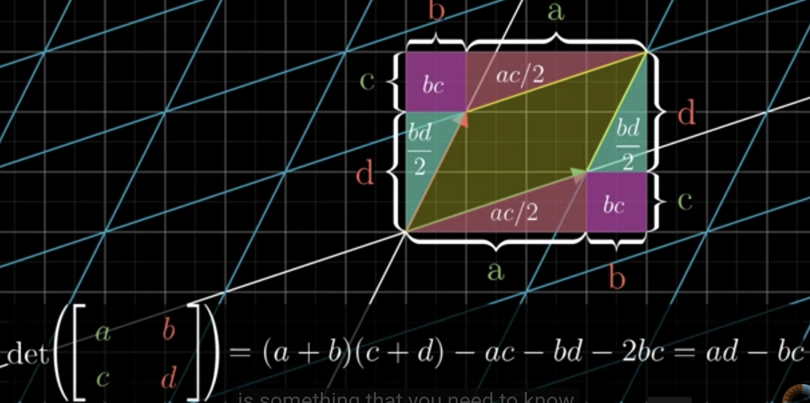
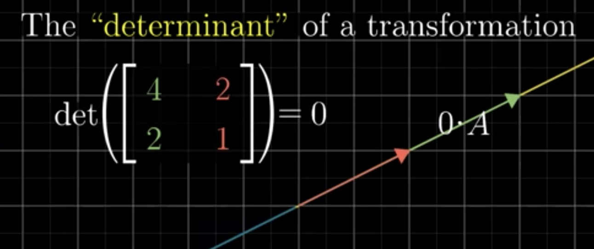

学习目标
- 理解什么是矩阵以及矩阵如何对应一个变换
- 解释并计算矩阵的逆和行列式
- 判断矩阵是否可逆
矩阵：对向量的操作
矩阵、向量及线性方程组
考虑下面方程组，
$$
\begin{align}
2x_1+3x_2=8\\
10x_1+x_2 = 13
\end{align}
$$
我们可以将上述方程写成矩阵的形式，
$$
\begin{bmatrix}
2 &3 \\
10 & 1
\end{bmatrix}
\begin{bmatrix}
x_1\\
x_2
\end{bmatrix}
=\begin{bmatrix}
8 \\
13
\end{bmatrix}
$$
我们泛化上述公式，
$$
\color{red}{\mathbf{Ax=b}}
$$
矩阵乘以向量可以从两种角度看待,
- 向量作用于矩阵：是矩阵列向量的 linear combination, with the components of $x$ as the corresponding weight. The result of linear combination of the columns of $\mathbf{A}$ is $\mathbf{b}$.
- 矩阵作用于向量：matrix $\mathbf{A}$ transform the vector $\mathbf{x}$ to output $\mathbf{b}$. Say, $\mathbf{A}$ maps $\mathbf{x}$ to $\mathbf{b}$ or $\mathbf{x}$ is transformed by $\mathbf{A}$ to be $\mathbf{b}$.
我们现在侧重第二种角度。
回到之前方程组对应的矩阵形式，我们要问:
$$
\text{what vector }
\begin{bmatrix}
x_1\\
x_2
\end{bmatrix}
\text{could be transformed by}
\begin{bmatrix}
2 & 3 \\
10 & 1
\end{bmatrix}
\text{to output }
\begin{bmatrix}
8\\
13
\end{bmatrix}
$$
我们先看看矩阵对标准向量做了变换会得到什么，
$$
\begin{align}
\mathbf{Ae_1}=
\begin{bmatrix}
2 & 3\\
10 & 1
\end{bmatrix}
\begin{bmatrix}
1\\
0
\end{bmatrix}&=
\begin{bmatrix}
2\\
10
\end{bmatrix}=\mathbf{e_1}’ ,\\
\mathbf{Ae_2}=
\begin{bmatrix}
2 & 3\\
10 & 1
\end{bmatrix}
\begin{bmatrix}
0\\
1
\end{bmatrix}&=
\begin{bmatrix}
3\\
1
\end{bmatrix}=\mathbf{e_2}’
\end{align}
$$

上图展示了变换的结果，矩阵$\mathbf{A}$ 对标准正交基做了变换： $\mathbf{A}$ map ${\mathbf{e_1,e_2}}$ to ${\mathbf{e_1^\prime,e_2^\prime}}$.
Matrix transform the basis vectors, so it changes the space.我们可以从这样的视角看待矩阵：
Matrix is a function which acts on input vectors and generate other output vectors. 矩阵转换向量，向量被矩阵转换。
实际上所谓线性代数，不过是对空间中向量进行操作的一个系统。矩阵如何对空间进行变换
上小节内容讲明了一个矩阵如何对标准正交基做变换- each axis is transformed by the corresponding column of matrix.
why? tips: Basis is orthonormal， hence the there is 0 in the basis vectors. 根据矩阵乘法的定义，只有矩阵对应列才会最终影响到transformed basis 对应的axis（component）。
任何向量都可以由基的线性组合表示，因此矩阵对一个向量变换的结果也同样是基向量的线性组合。这意味着，
- 我们空间的格子线保持平行和等间隔
- 它们可能被拉升，但原点位置没变，空间没有被弯曲
上述结论是向量加法和数乘操作的结果。
下面我们给出一些矩阵乘法的性质，并结合这些性质来展示矩阵是如何对空间做变换的：
$$
\begin{align}
\mathbf{A}\vec r &= \vec r ^\prime \\
\mathbf{A}(n\vec r )&= n\vec r ^\prime\\
\mathbf{A}(\vec r+\vec s) &= \vec r ^\prime +\vec s^\prime \\
\color{red}{\mathbf{A}(n\vec e_1 +m\vec e_2)}&\color{red}{= n\vec e_1 ^\prime + m\vec e_2^\prime }
\end{align}
$$
从上述公式有如下结论
- basis vecotrs is transformed：$e_1,e_2$ move to $e_1^\prime,e_2^\prime$.
- Vector $\vec r$ is transformed to be $\vec r^\prime$. $\vec r$ is a linear combination of $e_1,e_2$ with some weights, $\vec r^\prime$ is a also linear combination of $e_1^\prime,e_2^\prime$ with some weights.
- But,the weights in original space is the same as the weights in the transformed space.(see last equation), and the weight is the components of vector $\vec r$ : $n,m$.
- $\color{blue}{\text{First column of }\mathbf{A} =\vec e_1^\prime, \text{Second column of }\mathbf{A}=\vec e_2^\prime}$
看一个具体的例子 $\mathbf{A}\vec r =\vec r^\prime$at the same time as $\mathbf{A}{\vec e_1,\vec e_2}={\vec e_1^\prime,\vec e_2^\prime}$ ，
$$
\begin{align}
\begin{bmatrix}
2 & 3\\
10 & 1
\end{bmatrix}
\begin{bmatrix}
3\\
2
\end{bmatrix}=
\begin{bmatrix}
12\\
32
\end{bmatrix}&\Rightarrow \\
\begin{bmatrix}
2 & 3\\
10 & 1
\end{bmatrix}
(3 \begin{bmatrix}
1\\
0
\end{bmatrix} + 2\begin{bmatrix}
0\\
1
\end{bmatrix})&= 3 (\begin{bmatrix}
2 & 3\\
10 & 1
\end{bmatrix}
\begin{bmatrix}
1\\
0
\end{bmatrix})+2(\begin{bmatrix}
2 & 3\\
10 & 1
\end{bmatrix}
\begin{bmatrix}
0\\
1
\end{bmatrix})\\
&=
3\begin{bmatrix}
2\\
10
\end{bmatrix}+
2\begin{bmatrix}
3\\
1
\end{bmatrix}\\
&=\begin{bmatrix}
12\\
32
\end{bmatrix}
\end{align}
$$
验证了我们之前的结论，矩阵乘法的结果可以看作是new basis vector i.e. transformed basis vector 的加权和，矩阵对向量的变换过程改变了basis vectors，但保持权重不变。
$$
\color{green}{\begin{align}
&\text{Means: Any vector } \vec r\ or\ \vec s \text{ could be represented as }{n\vec e_1+m\vec e_2}, \text{after the vector is transformed by matrix }\mathbf{A}\\
&\text{it could be represented as } {ne_1^\prime+me_2^\prime}
\end{align}}
$$
之前我们说过矩阵乘向量可以从两种角度来看，殊途同归, 我们以 $\mathbf{Ax=b}$为例 ：
$$
\begin{align}
&\text{Linear combination of columns of matrix } \mathbf{A}:\\
&\mathbf{Ax}=\mathbf{A}\begin{bmatrix}
x_1 \\
x_2
\end{bmatrix}=
x_1\text{(1st column of }\mathbf{A})+x_2(\text{2nd column of }\mathbf{A})\\
&\text{Matrix operation on vectors } \mathbf{A}:\\
&\mathbf{Ax} =\mathbf{A}\begin{bmatrix}
x_1 \\
x_2
\end{bmatrix}= \mathbf{A}(x_1\begin{bmatrix}1\\0\end{bmatrix}+x_2\begin{bmatrix}0\\1 \end{bmatrix} )
=x_1(\mathbf{A}\begin{bmatrix} 1\\0 \end{bmatrix})+x_2(\mathbf{A}\begin{bmatrix}0\\1\end{bmatrix} )\\
&= x_1(\color{blue}{\mathbf{A}\vec e_1}) + x_2(\color{blue}{\mathbf{A}\vec e_2})\longrightarrow \color{blue}{\text{Matrix operation on vectors: basis transformation}} \\
&= x_1\color{blue}{\vec e_1^\prime} + x_2\color{blue}{\vec e_2^\prime}\\
&= x_1(\color{red}{\text{1st column of matrix }\mathbf{A}})+x_2(\color{red}{\text{2nd column of matrix }\mathbf{A}}) \longrightarrow \color{red}{\text{Linear combination}}
\end{align}
$$
矩阵变换的类型
transform basis $\Leftrightarrow$ transform all the vectors $\Leftrightarrow$ transform the space.
介绍一些特殊的矩阵，看看他们能对basis-向量-space做什么变换。
Identifity Matrix
$\begin{bmatrix}1&0 \\ 0&1 \end{bmatrix}\begin{bmatrix}x\\y \end{bmatrix}=\begin{bmatrix}x \\ y \end{bmatrix}$
没有对向量作出任何改变，也没有改变basis vector
Diagonal Matrix
$\begin{bmatrix}3&0 \\ 0&2 \end{bmatrix}\begin{bmatrix}x\\y \end{bmatrix}=\begin{bmatrix}3x \\ 2y \end{bmatrix}=x\begin{bmatrix}3\\0 \end{bmatrix}+y\begin{bmatrix}0\\2 \end{bmatrix}$
改变了basis vectors：拉长了basis vectors，当然也拉长了空间所有的vector，拉长了空间。如下图所示，

$\begin{bmatrix}-1&0 \\ 0&2 \end{bmatrix}\begin{bmatrix}x\\y \end{bmatrix}=\begin{bmatrix}-x \\ 2y \end{bmatrix}=x\begin{bmatrix}-1\\0 \end{bmatrix}+y\begin{bmatrix}0\\2 \end{bmatrix}$
改变了basis vectors: flip the first basis vector,and strech the second basis vector, 当然其作用于全部向量（作用于the space，反转了第一个axis，拉升了第二个axis）。
$\begin{bmatrix}-1&0 \\ 0&-1 \end{bmatrix}\begin{bmatrix}x\\y \end{bmatrix}=\begin{bmatrix}-x \\ -y \end{bmatrix}=x\begin{bmatrix}-1\\0 \end{bmatrix}+y\begin{bmatrix}0\\-1 \end{bmatrix}$
将两个axis 旋转$180^\circ$ 且没有scale（保持空间中所有向量norm/长度不变），叫做“inversion”。新旧space关于原点对称。
以上2种情况如下图所示，

Mirror Matrix
$\begin{bmatrix}0&1 \\ 1&0 \end{bmatrix}\begin{bmatrix}x\\y \end{bmatrix}=\begin{bmatrix}y \\ x \end{bmatrix}=x\begin{bmatrix}0\\1 \end{bmatrix}+y\begin{bmatrix}1\\0 \end{bmatrix}$
将basis vectors沿着$45^\circ$ 直线对折，将第一个axis逆时针旋转$45^\circ$, 第二个axis顺时针旋转$45^\circ$ .
$\begin{bmatrix}0&-1 \\ -1&0 \end{bmatrix}\begin{bmatrix}x\\y \end{bmatrix}=\begin{bmatrix}-y \\ -x \end{bmatrix}=x\begin{bmatrix}0\\-1 \end{bmatrix}+y\begin{bmatrix}-1\\0 \end{bmatrix}$
将第一个axis顺时针旋转$90^\circ$,将第二个axis 逆时针旋转$90^\circ$ ，将 basis vectors 沿$135^\circ$ 线对折，新旧space沿着$135^\circ$ 线堆成。
$\begin{bmatrix}-1&0 \\ 0&1 \end{bmatrix}\begin{bmatrix}x\\y \end{bmatrix}=\begin{bmatrix}-x \\ y\end{bmatrix}=x\begin{bmatrix}-1\\0 \end{bmatrix}+y\begin{bmatrix}0\\1 \end{bmatrix}$
将第一个axis inverse，第二个axis不变，将第一个basis vector inverse，第二个basis不变。变换后的space 与之前的space 沿着第二个axis对称（关于y轴对称）。
$\begin{bmatrix}1&0 \\ 0&-1 \end{bmatrix}\begin{bmatrix}x\\y \end{bmatrix}=\begin{bmatrix}x \\ -y \end{bmatrix}=x\begin{bmatrix}1\\0 \end{bmatrix}+y\begin{bmatrix}0\\-1 \end{bmatrix}$
保持第一个axis不变，将第二个axis旋转$180^\circ$. 新旧space 沿着第一个axis对称（关于x轴对称）。
以上几种沿轴对称的情况如下图，

Shear Matrix
$\begin{bmatrix}1&1 \\ 0&1 \end{bmatrix}\begin{bmatrix}x\\y \end{bmatrix}=\begin{bmatrix}x+y \\ y \end{bmatrix}=(x+y)\begin{bmatrix}1\\0 \end{bmatrix}+y\begin{bmatrix}0\\1 \end{bmatrix}$
没改变第一个axis, 第二个axis顺时针旋转$45^\circ$. 如下图，

Rotation Matrix
$\begin{bmatrix}0&-1 \\ 1&0 \end{bmatrix}\begin{bmatrix}x\\y \end{bmatrix}=\begin{bmatrix}-y \\ x \end{bmatrix}=x\begin{bmatrix}0\\1 \end{bmatrix}+y\begin{bmatrix}-1\\0 \end{bmatrix}$
空间逆时间旋转$90^\circ$, 如图，

矩阵变换的组合
上小节讲了通过矩阵进行 stretch、mirror、shear、rotation 等变换，本节考虑将这些对空间的变换进行组合时的情况，e.g. 先对向量 rotation，然后shear, etc.
初始量：
$\mathbf{A_2}\mathbf{A_1}\vec r=\mathbf{A_2}(\mathbf{A_1}\vec r)=(\mathbf{A_2}\mathbf{A_1})\vec r$
Let $\mathbf{A_1}=\begin{bmatrix}0&1\\-1&0\end{bmatrix}$,$\mathbf{A_2}=\begin{bmatrix}1&1\\0&1\end{bmatrix}$
Basis vectors：$\vec e_1=\begin{bmatrix} 1\\0\end{bmatrix}$, $\vec e_2 = \begin{bmatrix}0\\1 \end{bmatrix}$
$\vec r=\begin{bmatrix}n\\m \end{bmatrix}=n\vec e_1+m\vec e_2=n\vec e_1^\prime+m\vec e_2^\prime=n\vec e_1^{\prime\prime}+m\vec e_2^{\prime\prime}$
变换过程
$$
\begin{align}
&\mathbf{A_1}\vec e_1=\vec e_1^\prime=\begin{bmatrix}0\\-1\end{bmatrix},&&\mathbf{A_1}\vec e_2=\vec e_2^\prime = \begin{bmatrix} 1\\0\end{bmatrix}\\
&\mathbf{A_2}(\mathbf{A_1}\vec e_1)=\mathbf{A_2}\vec e_1^\prime=\vec e_1^{\prime\prime}=\begin{bmatrix}-1\\-1 \end{bmatrix}, &&\mathbf{A_2}(\mathbf{A_1}\vec e_2)=\mathbf{A_2}\vec e_2^{\prime}=\vec e_2^{\prime\prime}=\begin{bmatrix}1\\0 \end{bmatrix}
\end{align}
$$
从上面过程就可以得到，$\mathbf{A_1A_2}=\begin{bmatrix}-1&1\\-1&0 \end{bmatrix}$，其过程图示如下，

Note！： $\mathbf{A_1A_2}\vec r \ne \mathbf{A_2A_1}\vec r$, 矩阵变换的顺序是不能变的！
Summary:- matrix is linear transformation
- matrix composition means combination of lienar transformation
- linear transformation is also function
- so, matrix composition is also function composition which is much related with calculus.
- matrix multiplication is in fact is combination of linear transformation.
逆矩阵
高斯消元
解决线性方程组：$\mathbf{Ax=b}$
Gaussian-Jordan Elimination
$$
[\mathbf{A|b}] \stackrel{\text{Gaussian Elimination}}\longrightarrow [\mathbf{U\vert c}] \stackrel{\text{Jordan Elimination}}\longrightarrow [\mathbf{I|x}]
$$
从高斯消元到逆矩阵
逆矩阵
$$
\text{Given a square matrix }\mathbf{A}, \text{if and only if there exist a matrix }\mathbf{A}^{-1} \text{satisfy}:\\
\mathbf{AA^{-1}}=\mathbf{A^{-1}A}=\mathbf{I}\\
\text{The matrix }\mathbf{A^{-1}} \text{is refered as the Inverse of }\mathbf{A}.
$$
高斯消元–解方程—求逆矩阵
我们知道高斯消元是用来解方程的，其实，他也同样是求解逆矩阵的过程，理由如下，
对于矩阵乘法有，
$$
\mathbf{AB=A[b1\ \ b2\ \ b3]}=[\mathbf{Ab_1\ \ Ab_2\ \ Ab_3}]=\mathbf{[(AB)_1\ \ (AB)_2\ \ (AB)_3]}
$$
将上述结论带入逆矩阵的定义我们有，
$$
\mathbf{AA^{-1}=A[c_1\ \ c_2\ \ c_3]=[Ac_1\ \ Ac_2\ \ Ac_3]=I}
$$
因此
$$
\mathbf{[Ac_1]}=\begin{bmatrix}1\\0\\0\end{bmatrix}, \mathbf{[Ac_2]}=\begin{bmatrix}0\\1\\0\end{bmatrix},\mathbf{[Ac_3]}=\begin{bmatrix}0\\0\\1\end{bmatrix},
$$
其实上面是3个 $\mathbf{Ax=b}$ 形式的方程，根据高斯消元我们可以求得：$\mathbf{c_1,c_2,c_3}$。也就得到$\mathbf{A^{-1}=[c_1\ \ c_2\ \ c_3]}$. 实际上我们可以合并解三个方程组的过程，一次得到 $\mathbf{A^{-1}}$,
$$
\mathbf{[A|I]}\stackrel{Gauss Elimination} \longrightarrow \mathbf{[I|A^{-1}]}
$$
只有方阵才有逆矩阵的概念
用逆矩阵解决线性方程
$\mathbf{Ax=b}\Rightarrow \mathbf{x=A^{-1}b}$
用逆矩阵解方程的前提是：系数矩阵$\mathbf{A}$ 的逆矩阵得存在。
行列式
什么是行列式？
根据前面的内容知道：
Linear transformation change the space. 线性变换改变了空间，改变了多少？这是由determinant 回答的。
几何上直观理解什么是行列式：The factor by which a linear transformation change any area(2-D) or volume(3-D) is called -determinant of that transformation.

一般的二阶行列式$\begin{vmatrix}a & b\\c & d\end{vmatrix}=ab-cd$
其几何意义如下图，

前面讲到matrix composition，也即：transformation combination，其是就是复合函数的概念。 前面讲的行列式，针对单个变换，是刻画 transformation/matrix 对空间改变的程度的量。那么行列式对于组合变换呢？即：
$\mathbf{M_1M_2}$ 这个组合变换的determinant 是什么呢？其几何意义是什么？
$\det(\mathbf{M_2M_1})=\det (\mathbf{M_2})\det (\mathbf{M_1})$
其可以看作是在$\mathbf{M_1}$ 对空间变换的基础上，用 $\mathbf{M_2}$ 对中间态空间再做一次变换。其中第一次变换的结果对第二次变换来讲，可以看作 “unit square”.
行列式和逆
前面讲到，行列式衡量了一个线性变换对 area or volume of a region in the space 改变的程度（系数），那如果这个系数为0 呢？ 如下图，

形式化定义
TO-DO…
总结
- 行列式只针对方阵，是线性变换相伴随的量。No Linear transformation, No determinant.
- 行列式是线性变换对volum of space 改变的系数, 衡量改变大小。
- 行列式是一个scalar, 有正负，体现线性变换对space改变的oritiention。
- 行列式为0的意思是：the corresponding linear transformation squash the volume or are of any region of the space into 0,say a plane, a line or extreme case, a single point. 因此，矩阵是singular, 当然不可逆。